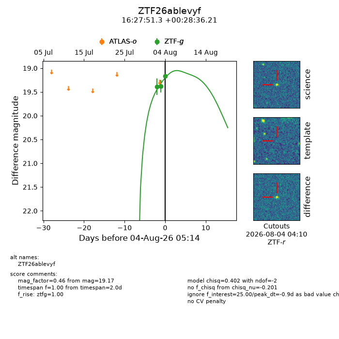
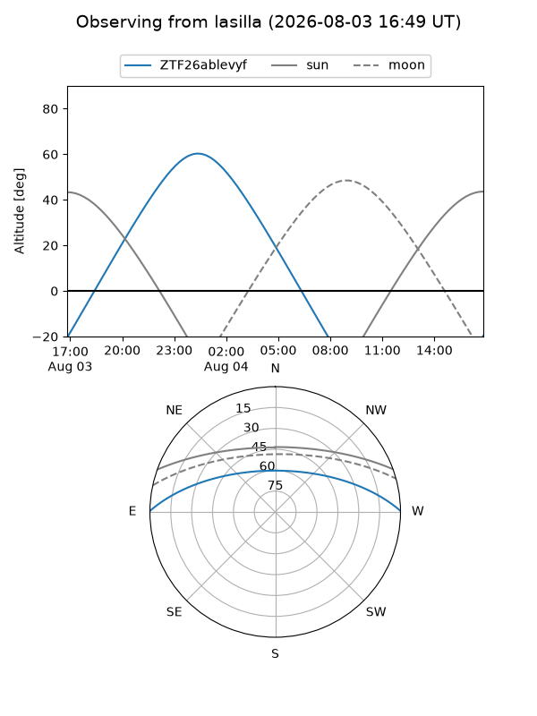
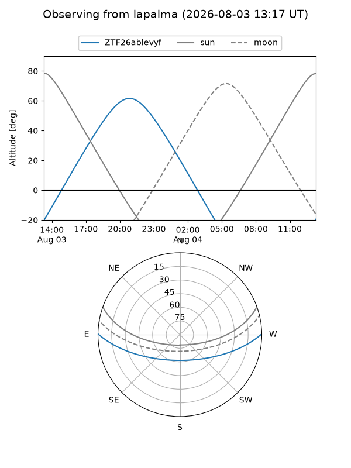
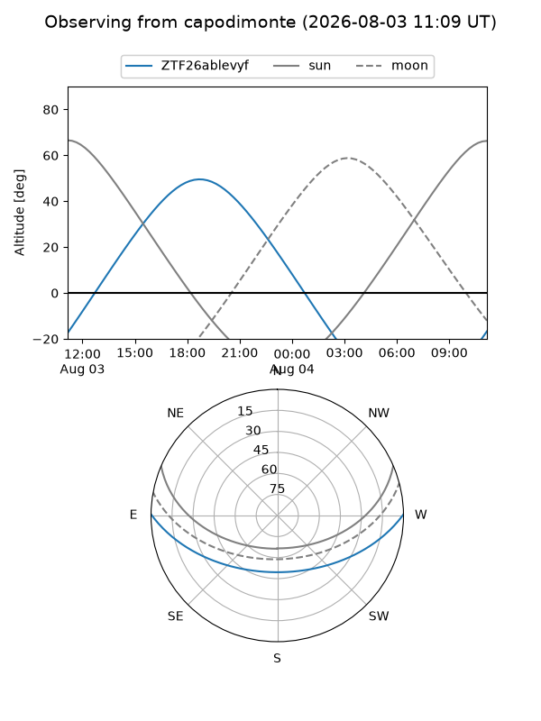
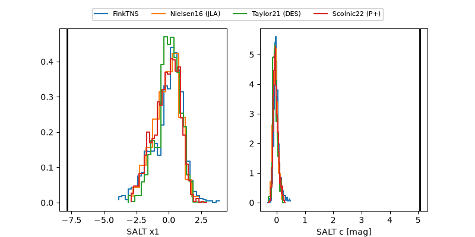

ZTF26ablevyf
Target ZTF26ablevyf at 2026-08-04 05:33
Aliases and brokers:
FINK-ZTF: ztf.fink-portal.org/ZTF26ablevyf
Lasair-ZTF: lasair-ztf.lsst.ac.uk/objects/ZTF26ablevyf
ALeRCE-ZTF: alerce.online/object/ZTF26ablevyf
Direct TNS query: direct search
alt names
ZTF26ablevyf (ztf,fink_ztf)
Coordinates:
equatorial (ra, dec) = 246.9639,+0.47672
equatorial (HMS+DMS) = 16:27:51.33,+00:28:36.21
galactic (l, b) = (15.1414,+31.70763)
Flags:
peak dt: -0.9
Photometry:
last ztfg=19.17
3 ztfg detections
Lightcurve

Visibility



Additional plots
